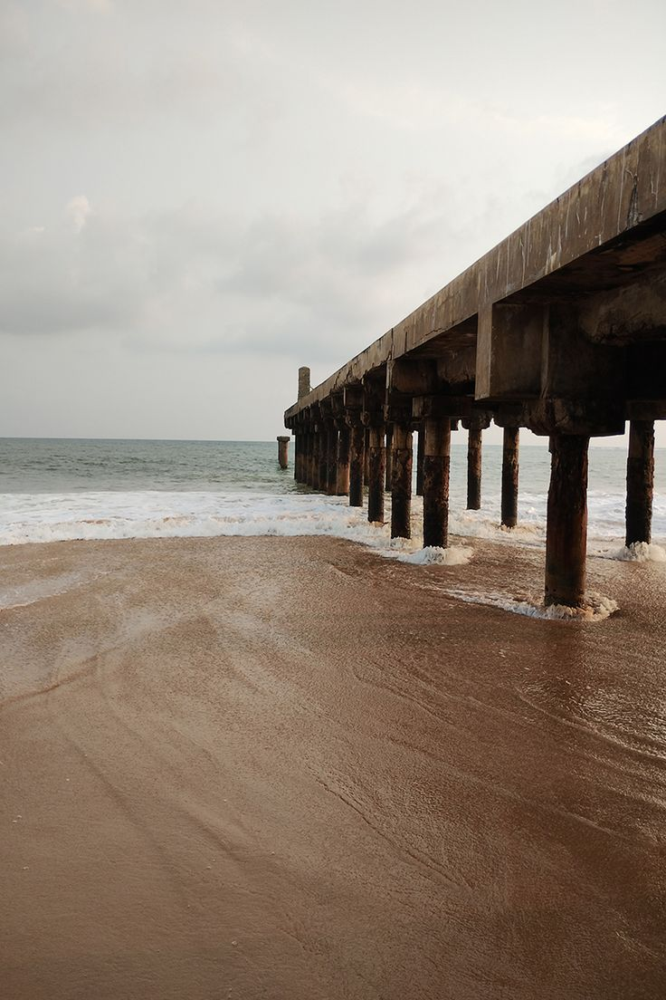

RK Beach and Coastline
Ramakrishna Beach, locally known as RK Beach, stretches along the heart of Vizag's shoreline. It is a vibrant gathering area where people come to enjoy sea breezes, walk along the historic pier structures, and watch sunset waves break on the sand.


Curving ocean shoreline stretching across the coastal belt of Visakhapatnam.